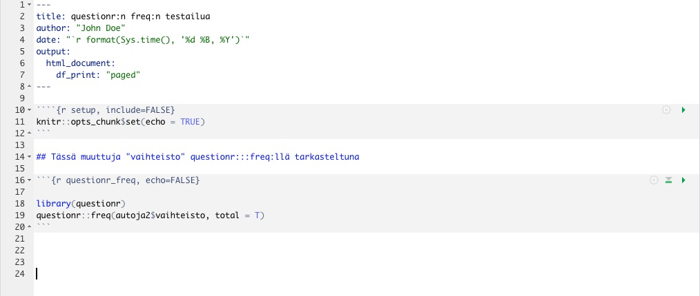

14 Analyysejä R Markdownilla
Voit nyt alkaa analysoida dataasi “autoja2” R Markdown -dokumentissasi. Voit halutessasi tuhota RStudion sabluunasta tekstiä ja chunkeja tai kirjoittaa niiden päälle. Varo kuitenkin sotkemasta YAML-otsikkoa tai ensimmäistä “r setup” -chunkia.
14.1 Datasetin tarkastelu
14.1.1 head-komento
Hyödynnämme erittäin hyödyllistä komentoa head, joka tulostaa ensimmäiset 6 riviä datastamme. Saamme luotua pikasilmäyksen dataamme ja halutessamme jaettua sen R Markdownin muodossa eteenpäin.
Voit esim. kirjoittaa “Tässä muutaman rivin ote valmiista datastamme tässä artikkelissa”. Sen jälkeen voit lyödä enterillä pari tyhjää riviä ja kirjoittaa seuraavan chunkin, jossa pitää siis olla gravisaksentteja 3 kpl alussa ja lopussa:
Tässä muutaman rivin ote valmiista datastamme tässä artikkelissa.
## # A tibble: 6 × 5
## Automerkit bensankulutus_eu hevosvoima_eu massa_eu vaihteisto
## <chr> <dbl> <dbl> <dbl> <fct>
## 1 Mazda RX4 11.2 112. 1188. 1
## 2 Mazda RX4 Wag 11.2 112. 1304. 1
## 3 Hornet Sportabout 12.6 177. 1560. 0
## 4 Duster 360 16.4 248. 1619. 0
## 5 Merc 240D 9.64 62.9 1447. 0
## 6 Merc 230 10.3 96.3 1429. 0Vaikka tibble on näppärä monella tapaa, henkilökohtaisesti en pidä tavasta, jolla tibble-tyyppisten datasettien desimaalipaikat tulostuvat. Apuun tässä (ja monessa muussa yhteydessä) tulostusjäljen kaunistamiseksi tulee komento kable, josta seuraavaksi.
14.1.2 kable kaunistaa
Jotta tuloste olisi nätimpää katsella, lisätään vielä komento kable, joka tulee paketin knitr mukana. Voit asentaa kyseisen paketin antamalla konsoliin seuraavan käskyn:
install.packages("knitr")Tämän lisäksi sinun kannattaa kutsua knitr käyttöön lisäämällä se ensimmäiseen, r setup -nimiseen chunkiin. Tämän jälkeen ensimmäinen chunkisi näyttää seuraavalta:
```{r setup, include=FALSE}
knitr::opts_chunk$set(echo = TRUE)
library(dplyr)
library(knitr)
source("minun_datani.R")
```Tämän jälkeen pääset käyttämään kable-komentoa.
Putkitetaan kaikki komennot seuraavasti:
Näet nyt kauniimman tulosteen:
| Automerkit | bensankulutus_eu | hevosvoima_eu | massa_eu | vaihteisto |
|---|---|---|---|---|
| Mazda RX4 | 11.200000 | 111.52793 | 1188.432 | 1 |
| Mazda RX4 Wag | 11.200000 | 111.52793 | 1304.100 | 1 |
| Hornet Sportabout | 12.577540 | 177.43080 | 1560.384 | 0 |
| Duster 360 | 16.447552 | 248.40312 | 1619.352 | 0 |
| Merc 240D | 9.639344 | 62.86120 | 1446.984 | 0 |
| Merc 230 | 10.315789 | 96.31958 | 1428.840 | 0 |
14.1.3 tail-komento
Komento tail tekee saman kuin head mutta toisesta suunnasta eli näyttää datasetin 6 viimeistä riviä.
| Automerkit | bensankulutus_eu | hevosvoima_eu | massa_eu | vaihteisto |
|---|---|---|---|---|
| Porsche 914-2 | 9.046154 | 92.26402 | 970.7040 | 1 |
| Lotus Europa | 7.736842 | 114.56960 | 686.2968 | 1 |
| Ford Pantera L | 14.886076 | 267.66704 | 1437.9120 | 1 |
| Ferrari Dino | 11.939086 | 177.43080 | 1256.4720 | 1 |
| Maserati Bora | 15.680000 | 339.65325 | 1619.3520 | 1 |
| Volvo 142E | 10.990654 | 110.51404 | 1261.0080 | 1 |
14.2 Muuttujien tarkastelu
14.2.1 min, max, mean
dplyr:in käskyllä summarise voimme helposti katsoa esim. minimi- ja maksimiarvot sekä keskiarvot haluamistamme muuttujista:
```{r keskiarvoja, echo=FALSE}
# Valitaan datasettimme "autoja2" käsittelyyn:
autoja2 %>%
# Käytetään summarise-käskyä:
summarise(bensankulutuksen_minimi = min(bensankulutus_eu),
bensankulutuksen_maksimi = max(bensankulutus_eu),
bensankulutuksen_keskiarvo = mean(bensankulutus_eu)) %>%
# Kaunistetaan jälki kablella:
kable
```| bensankulutuksen_minimi | bensankulutuksen_maksimi | bensankulutuksen_keskiarvo |
|---|---|---|
| 7.736842 | 22.61538 | 13.60331 |
Voit myös tulostaa tietyn tunnusluvun - vaikkapa keskiarvon - useammalle muuttujalle käyttämällä komentoa summarise_at. Kannattaa kirjoittaa ennen seuraavaa koodia vielä vapaata tekstiä, esim.
Alla näkyy datasetin “autoja2” muuttujien keskiarvoja.
```{r keskiarvoja2, echo=FALSE}
# Valitaan datasettimme "autoja2" käsittelyyn
autoja2 %>%
# Käytetään käskyä summarise at. Halutut muuttujat täytyy
# ilmaista rotlassa seuraavasti:
# c("muuttuja1", "muuttuja2", "muuttuja3")
# Näiden jälkeen tulee vielä haluttu tunnusluku, seuraavassa valittiin mean
summarise_at(c("bensankulutus_eu", "hevosvoima_eu", "massa_eu"), mean) %>%
# Kaunistetaan jälki kablella
kable
```Alla näkyy datasetin “autoja2” muuttujien keskiarvoja.
| bensankulutus_eu | hevosvoima_eu | massa_eu |
|---|---|---|
| 13.60331 | 165.9536 | 1551.711 |
Tästä analyysistä käy ilmi, että datasetin “autot2” sisältämät autot ovat kohtalaisia bensasyöppöjä.
14.2.2 summary
Funktiolla summary() saat yhteenvedon koko datasetistäsi.
| Automerkit | bensankulutus_eu | hevosvoima_eu | massa_eu | vaihteisto | |
|---|---|---|---|---|---|
| Length:25 | Min. : 7.737 | Min. : 52.72 | Min. : 686.3 | 0:16 | |
| Class :character | 1st Qu.:11.200 | 1st Qu.:111.53 | 1st Qu.:1304.1 | 1: 9 | |
| Mode :character | Median :13.213 | Median :177.43 | Median :1560.4 | NA | |
| NA | Mean :13.603 | Mean :165.95 | Mean :1551.7 | NA | |
| NA | 3rd Qu.:15.474 | 3rd Qu.:207.85 | 3rd Qu.:1714.6 | NA | |
| NA | Max. :22.615 | Max. :339.65 | Max. :2460.3 | NA |
Halutessasi voit ajaa komennon summary myös jokaiselle datasettisi muuttujalle erikseen, kun “looppaat” summaryn sapply-nimisen komennon läpi. Tällöin et voi kuitenkaan käyttää kablea, joten jälki on rujompaa.
## $Automerkit
## Length Class Mode
## 25 character character
##
## $bensankulutus_eu
## Min. 1st Qu. Median Mean 3rd Qu. Max.
## 7.737 11.200 13.213 13.603 15.474 22.615
##
## $hevosvoima_eu
## Min. 1st Qu. Median Mean 3rd Qu. Max.
## 52.72 111.53 177.43 165.95 207.85 339.65
##
## $massa_eu
## Min. 1st Qu. Median Mean 3rd Qu. Max.
## 686.3 1304.1 1560.4 1551.7 1714.6 2460.3
##
## $vaihteisto
## 0 1
## 16 9R:lle on useita paketteja, joiden avulla saa kauniimpaa ja monipuolisempaa kuvailua datasetistäsi kuin mihin summary-komento pystyy. Seuraavaksi esitellään eräs tällainen.
14.2.3 summarytools
summarytools-paketin funktioilla saa kauniita ja monipuolisia esityksiä datasetistäsi.
Asentaminen tapahtuu siten, että kirjoitat konsoliin install.packages("summarytools") ja painat enteriä.
14.2.3.1 dfSummary
dfSummary antaa hyvin monipuolisen esityksen koko datasetistäsi. Katso alla esimerkkiä datasetistämme “autoja2”. Aja seuraava koodi:
```{r summarytools2, echo=FALSE, results="asis"}
# summarytools vaatii ylle määreen results="asis" jotta jälki näyttää
# R Markdownissa kauniilta.
library(summarytools)
autoja2 %>% dfSummary(varnumbers = FALSE,
plain.ascii = FALSE,
style = "grid",
graph.magnif = 0.75,
max.distinct.values = 3, # Laitoin tähän 3, jotta ei
# lähde listaamaan automerkkejä
# rivikaupalla.
valid.col = FALSE,
tmp.img.dir = "/tmp")
```
Näet tämän jälkeen seuraavan yhteenvedon:
| Variable | Stats / Values | Freqs (% of Valid) | Graph | Missing |
|---|---|---|---|---|
| Automerkit [character] |
1. AMC Javelin 2. Cadillac Fleetwood 3. Camaro Z28 [ 22 others ] |
1 ( 4.0%) 1 ( 4.0%) 1 ( 4.0%) 22 (88.0%) |
 |
0 (0.0%) |
| bensankulutus_eu [numeric] |
Mean (sd) : 13.6 (3.8) min < med < max: 7.7 < 13.2 < 22.6 IQR (CV) : 4.3 (0.3) |
20 distinct values |  |
0 (0.0%) |
| hevosvoima_eu [numeric] |
Mean (sd) : 166 (68.8) min < med < max: 52.7 < 177.4 < 339.7 IQR (CV) : 96.3 (0.4) |
17 distinct values |  |
0 (0.0%) |
| massa_eu [numeric] |
Mean (sd) : 1551.7 (440.4) min < med < max: 686.3 < 1560.4 < 2460.3 IQR (CV) : 410.5 (0.3) |
22 distinct values |  |
0 (0.0%) |
| vaihteisto [factor] |
1. 0 2. 1 |
16 (64.0%) 9 (36.0%) |
 |
0 (0.0%) |
14.2.3.2 descr
summarytools-paketin funktio descr ottaa datasetistä vain jatkuvat (numeeriset) muuttujat käsittelyyn, ja näyttää niistä erilaisia tunnuslukuja käyttäjän toiveita noudattaen. Tarkastele seuraavia esimerkkejä.
Ensimmäinen esimerkki:
```{r descr, echo=FALSE, results="asis"}
library(summarytools)
descr(autoja2,
stats = "common",
transpose = TRUE,
headings = FALSE)
```
Pyysimme “common” tunnuslukuja - näet tähän alle tulostuneesta taulukosta mitä ne descr-komennon mielestä ovat.
Huomaa, että R heittää taulukon yläpuolelle herjan, että vain numeeriset muuttujat pääsivät analyysiin, mikä oli tiedossa:
## Non-numerical variable(s) ignored: Automerkit, vaihteisto| Mean | Std.Dev | Min | Median | Max | N.Valid | Pct.Valid | |
|---|---|---|---|---|---|---|---|
| bensankulutus_eu | 13.60 | 3.82 | 7.74 | 13.21 | 22.62 | 25.00 | 100.00 |
| hevosvoima_eu | 165.95 | 68.76 | 52.72 | 177.43 | 339.65 | 25.00 | 100.00 |
| massa_eu | 1551.71 | 440.39 | 686.30 | 1560.38 | 2460.33 | 25.00 | 100.00 |
Toisessa esimerkissä määrittelemme itse haluamamme tunnusluvut:
```{r descr2, echo=FALSE, results="asis"}
library(summarytools)
descr(autoja2,
stats = c("mean","sd","min","max"),
transpose = TRUE,
headings = FALSE)
```## Non-numerical variable(s) ignored: Automerkit, vaihteisto| Mean | Std.Dev | Min | Max | |
|---|---|---|---|---|
| bensankulutus_eu | 13.60 | 3.82 | 7.74 | 22.62 |
| hevosvoima_eu | 165.95 | 68.76 | 52.72 | 339.65 |
| massa_eu | 1551.71 | 440.39 | 686.30 | 2460.33 |
Kirjoittamalla konsoliin ?descrsaat tietää tarkemmin, mitä kaikkia tunnuslukuja (Helpin kohta “stats”) voit funktiolta descr pyytää.
14.2.3.3 freq
summarytools-paketin funktiolla freq tutkitaan kategoristen muuttujien ominaisuuksia: n-lukuja, prosentuaalisia osuuksia ja kategorioiden kumulatiivista frekvenssiä.
Olen säätänyt alla olevaan esimerkkikoodiin asetukset siten, että tämä funktio olisi mahdollisimman paljon SASin loistavan PROC FREQin kaltainen.
```{r freq, echo=FALSE, results="asis"}
library(summarytools)
st_options(freq.cumul = TRUE,
freq.totals = TRUE,
freq.report.nas = FALSE,
plain.ascii = FALSE,
headings = FALSE)
freq(autoja2$vaihteisto,
style = 'rmarkdown',
caption = 'Frequencies: autoja2$vaihteisto')
```Tarkastelemme yllä näkyvän koodin kanssa datasetin “autoja2” kategorisen muuttujan “vaihteisto” kategorioiden (0 ja 1) tunnuslukuja. Otin yksistään tämän kirjan lukujen numerointiin liittyvistä “painoteknisistä” syistä otsikot pois; samasta syystä lisäsin käsin otsikon (caption-tekstin). Taulukko näkyy tässä alla:
| Freq | % | % Cum. | |
|---|---|---|---|
| 0 | 16 | 64.00 | 64.00 |
| 1 | 9 | 36.00 | 100.00 |
| Total | 25 | 100.00 | 100.00 |
14.2.3.4 ctable
summarytools-paketin funktio ctable pystyy tekemään ristiintaulukointeja hieman samaan tapaan kuin SASin PROC FREQ.
Tätä harjoitusta varten teemme uuden kategorisen muuttujan “bensasyoppo”:
```{r ctable, echo=FALSE, results='asis'}
library(summarytools)
# Tehdään tätä demoa varten uusi muuttuja "bensasyoppo"
autoja2 %>% mutate(bensasyoppo = ifelse(bensankulutus_eu < 13.2, 0, 1)) -> autoja3
autoja3$bensasyoppo <- as.factor(autoja3$bensasyoppo)
ctable(x = autoja3$vaihteisto,
y = autoja3$bensasyoppo,
prop = 'r',
totals = T,
headings = FALSE)
```| bensasyoppo | 0 | 1 | Total | |
| vaihteisto | ||||
| 0 | 5 (31.2%) | 11 (68.8%) | 16 (100.0%) | |
| 1 | 7 (77.8%) | 2 (22.2%) | 9 (100.0%) | |
| Total | 12 (48.0%) | 13 (52.0%) | 25 (100.0%) |
14.2.4 questionr::freq
Olen nyttemmin käyttänyt summarytools-paketin funktion freq asemesta aika paljon questionr-paketin funktiota freq. Tästä on seuraavia etuja:
- Jos ajaa analyysin vain chunkissa (painaa play-nappulaa chunkin oikeassa ylälaidassa), analyysin tulos näkyy mukavassa, “ei-ASCIImaisessa” painoasussa chunkin alla.
- Jos YAML-osuuteen dokumentin alussa kirjoittaa HTLM-tiedoston muodoksi “paged”, questionr::freq:n sama nätti asuu jatkuu vielä HTML-tiedostonkin puolella, kun on painanut nappia Knit.
Huonouksia:
- Käsiteltävän muuttujan nimi ei printtaannu minnekään
- Tämän voi huomioida siten, että laittaa RMarkdownissa alaotsikkoon kyseisen muuttujan risuaitojen perään
Alla toimiva esimerkki YAML-osuuksineen.

14.2.5 table1
Kannattaa harkita myös table1-paketin asentamista. Toinen yhtä hyvä vaihtoehto on paketti tableone. Näissä kummassakin tarkoituksena on, että hyvin yksinkertaisella käskyllä generoituisi mahdollisimman valmis “Table 1. Characteristics” -taulukko työstettävään artikkeliin.
Voit halutessasi asentaa table1-paketin antamalla seuraavan käskyn konsoliin:
install.packages("table1")Tämän jälkeen voit kokeilla paketin toimintaa seuraavasti:
```{r table1, echo=FALSE}
library(table1)
label(autoja2$bensankulutus_eu) <- "Polttoaineenkulutus"
label(autoja2$hevosvoima_eu) <- "Hevosvoima"
label(autoja2$massa_eu) <- "Massa"
label(autoja2$vaihteisto) <- "Vaihteisto"
units(autoja2$bensankulutus_eu) <- "l/100 km"
units(autoja2$massa_eu) <- "kg"
table1(~ bensankulutus_eu + hevosvoima_eu + massa_eu + factor(vaihteisto),
caption = "Table 1. Characteristics",
data=autoja2)
```| Overall (N=25) |
|
|---|---|
| Polttoaineenkulutus (l/100 km) | |
| Mean (SD) | 13.6 (3.82) |
| Median [Min, Max] | 13.2 [7.74, 22.6] |
| Hevosvoima | |
| Mean (SD) | 166 (68.8) |
| Median [Min, Max] | 177 [52.7, 340] |
| Massa (kg) | |
| Mean (SD) | 1550 (440) |
| Median [Min, Max] | 1560 [686, 2460] |
| factor(vaihteisto) | |
| 0 | 16 (64.0%) |
| 1 | 9 (36.0%) |
14.3 Kuvaajat
Voit helposti lisätä kuvaajia R Markdown -dokumenttiisi. Tarkastelemme seuraavaksi Base-R:n komentoa plot ja sen jälkeen monipuolista ggplotia.
14.3.2 ggplot2
Hiemankin monimutkaisemmissa kuvaajissa suosittelen, että harkitset paketin ggplot2 asentamista antamalla konsolissa käskyn:
install.packages("ggplot2")Tämän jälkeen voit tehdä uudelleen edellä jo esitetyn kuvaajan ggplot2:lla, ja voit esimerkiksi lisätä mukaan regressiosovitteen seuraavasti:
```{r bensankulutus_ggplot2, echo=FALSE, message = FALSE}
# ggplot2 on jonkun verran "puhelias", joten lisäsin
# option message = FALSE ylle; voit toki kokeilla
# sen pois ottamista.
library(ggplot2)
ggplot(autoja2, aes(hevosvoima_eu, bensankulutus_eu)) +
geom_point() +
geom_smooth(method='lm') # + theme_classic()
# voit ottaa yllä olevan risuaidan pois, jos tahdot klassisen teeman
```Jos et pidä taustaväreistä tai ylipäänsä väreistä kuvaajassasi, näitä voi säätää loputtomiin helposti ja hyvinkin pikkutarkasti ggplot2:sta käytettäessä. Myös valmiita erilaisia teemoja on; voit halutessasi kokeilla miltä theme_classic näyttää poistamalla sen edestä risuaidan yltä esimerkkikoodista.
14.4 Lineaarinen regressio
Tutkimme edellä hevosvoiman ja bensankulutuksen yhteyttä kuvaajilla. Voit tutkia samaa kysymyksenasettelua numeerisesti lineaarisella regressiolla.
14.4.1 Yksinkertainen regressio
Aloitamme ns. yksinkertaisella lineaarisella regressiolla:
```{r simppeliregressio, echo=FALSE}
# Jotta koodi toimii, vaaditaan kohta data = . mikä tarkoittaa sitä,
# että "putkesta" läpi tullut data otetaan regressiomalliin mukaan.
autoja2 %>%
lm(bensankulutus_eu ~ hevosvoima_eu, data = .) %>%
summary()
```##
## Call:
## lm(formula = bensankulutus_eu ~ hevosvoima_eu, data = .)
##
## Residuals:
## Min 1Q Median 3Q Max
## -4.7143 -1.4745 -0.2755 0.8574 7.3742
##
## Coefficients:
## Estimate Std. Error t value Pr(>|t|)
## (Intercept) 7.115144 1.477471 4.816 7.37e-05 ***
## hevosvoima_eu 0.039096 0.008249 4.739 8.91e-05 ***
## ---
## Signif. codes: 0 '***' 0.001 '**' 0.01 '*' 0.05 '.' 0.1 ' ' 1
##
## Residual standard error: 2.779 on 23 degrees of freedom
## Multiple R-squared: 0.4941, Adjusted R-squared: 0.4721
## F-statistic: 22.46 on 1 and 23 DF, p-value: 8.912e-05Tarkastellaan yltä tuloksia. Kun tutkittiin hevosvoiman assosiaatiota bensankulutukseen, kulmakertoimeksi tuli 0.039096 ja P-arvoksi 8.91e-05 ***.
Hevosvoima näyttää siis olevan yhteydessä bensankulutukseen, ainakin yksinkertaisella lineaarisella regressiolla tutkittuna.
Jälki ruudulla vain on rujohkon näköistä karvalakki-R:n summary-komennolla tuotettuna. Avuksi tulee tidy, siitä lisää seuraavassa.
14.4.2 tidy
Edellisessä kappaleessa ajoimme yksinkertaista lineaarista regressiota ja tarkastelimme tuloksia komennolla summary, jonka tuottama tuloste ruudulla ei kuitenkaan ole silmälle miellyttävää.
Asian korjaamiseksi voit harkita paketin broom asentamista. Kyseisen paketin mukana tulee komento tidy, jolla regressiomallin tuloksen saa jaettua kauniissa muodossa kun samaan putkeen vielä laitetaan kable.
Paketin broom voit asentaa ajamalla konsolissa seuraavan käskyn:
install.packages("broom")Tämän jälkeen voit ajaa seuraavan koodin:
```{r simppeliregressio_tidy, echo=FALSE}
# Huom. voit laittaa library(broom) -komennon myös suoraan r setup -chunkiisi,
# jolloin sitä ei tarvitse jatkuvasti toistella:
library(broom)
# Jotta koodi toimii, vaaditaan kohta data = . mikä tarkoittaa sitä,
# että "putkesta" läpi tullut data otetaan regressiomalliin mukaan.
autoja2 %>%
lm(bensankulutus_eu ~ hevosvoima_eu, data = .) %>%
tidy %>%
kable
```
Kuten alla näet, tidy ja kable tuottavat yhteistyönä kauniimpaa jälkeä eteenpäin jaettavaksi:
| term | estimate | std.error | statistic | p.value |
|---|---|---|---|---|
| (Intercept) | 7.1151438 | 1.4774711 | 4.815758 | 7.37e-05 |
| hevosvoima_eu | 0.0390963 | 0.0082491 | 4.739457 | 8.91e-05 |
14.4.3 Multippeli regressio
Jatketaan jo edellä esitellyllä lineaarisella mallilla, mutta lisätään vielä mukaan kovariaateiksi massa ja vaihteisto. Tällöin kyseessä on multippeli lineaarinen regressio.
```{r multippeliregressio, echo=FALSE}
library(broom)
autoja2 %>%
lm(bensankulutus_eu ~ hevosvoima_eu + massa_eu + vaihteisto, data = .) %>%
tidy %>%
kable
```| term | estimate | std.error | statistic | p.value |
|---|---|---|---|---|
| (Intercept) | 0.8439313 | 2.0599787 | 0.4096796 | 0.6861899 |
| hevosvoima_eu | 0.0157904 | 0.0069578 | 2.2694621 | 0.0338970 |
| massa_eu | 0.0064374 | 0.0014619 | 4.4033854 | 0.0002477 |
| vaihteisto1 | 0.4164721 | 1.0858710 | 0.3835373 | 0.7051768 |
Hevosvoima näyttää olevan edelleen yhteydessä bensankulutukseen, ei kuitenkaan enää niin vahvasti. Massa näyttää olevan enemmänkin yhteydessä bensankulutukseen. Mielenkiintoista kyllä, vaihteisto ei näytä olevan yhteydessä bensankulutukseen.
R-opas by Ville Langén is licensed under Attribution-ShareAlike 4.0 International